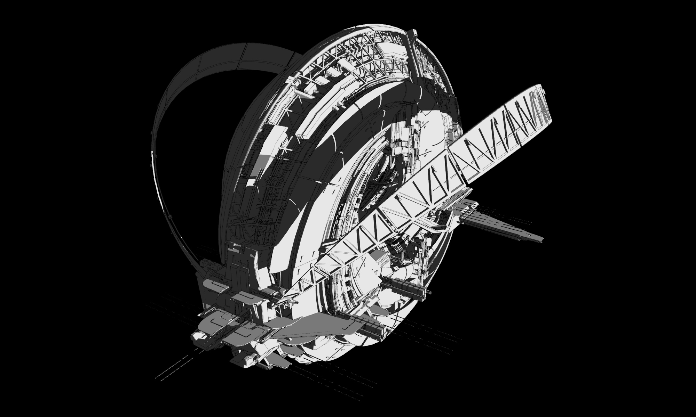
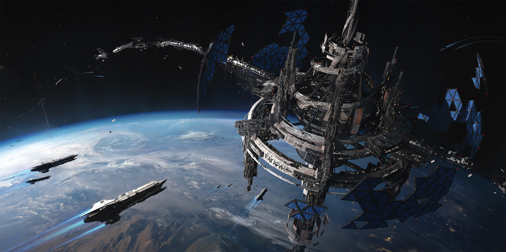
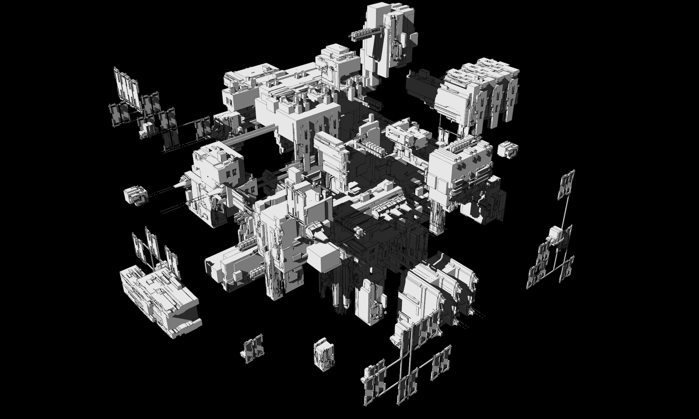
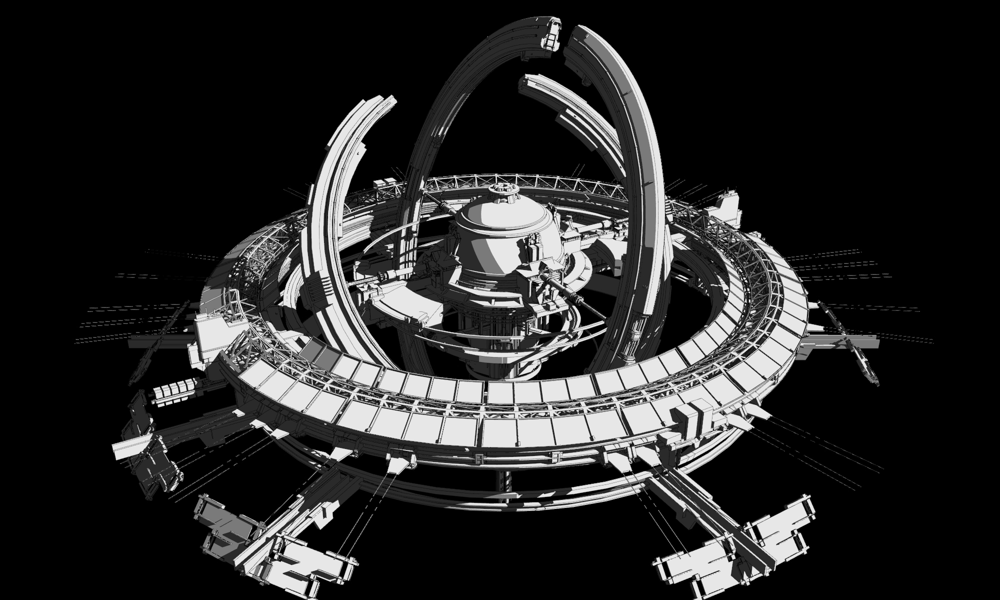
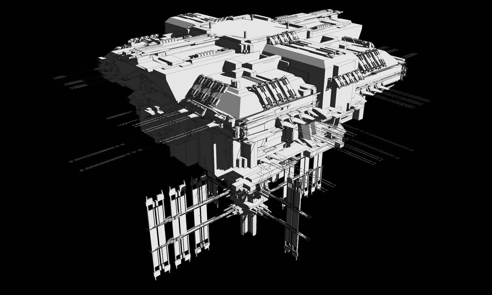
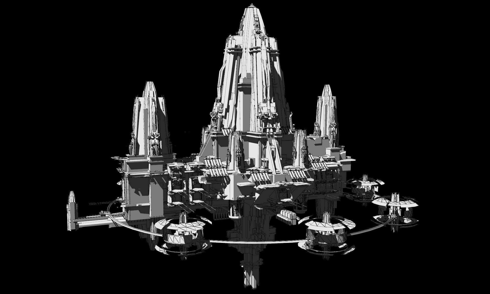

de
de en
en tw
tw zh-hant
zh-hant fr
fr id
id ru
ru vi
viROG SAGA
-
ROG SAGA.ROG SAGA.
-
Our Legacy Continues.Our Legacy Continues.
-
Universe.Universe.
-
Meet Our Heroes.Meet Our Heroes.
-
Creatives.Creatives.
Only at ROG SAGA.
Only at ROG SAGA. -
Here’s What’s More.Here’s What’s More.
G.O.V._
G.O.V.
Bien avant l’achèvement du système Astro Ladder, six stations spatiales sous le contrôle de différents pays gravitaient en orbite géosynchrone avec la Terre. Lors de la mise en service du système Astro Ladder et de la Bride équatoriale supérieure, des personnes et des matériaux talentueux furent transportés de la Terre vers les stations géosynchrones finales en passant par les six principales stations terrestres. Des ressources essentielles furent également envoyées dans les zones centrales des nouvelles colonies spatiales en cours de développement.
Au début de la guerre, tous les systèmes Astro Ladder furent abandonnés lorsque FATE s’appropria les stations pour en faire des centres de commandement dédiés à chacune de ses six légions. Au terme de la guerre, les G.U.N. reprirent le contrôle des six stations, qui furent restaurées et modernisées pour devenir les Avant-gardes orbitales géosynchrones (G.O.V.) destinées à aider l’organisation à gouverner le monde.
|
Space Station |
Astro Ladder |
Anchor Station |
|
Space Station ENTERPRISE |
Transporter B.M.U.S. |
Transporter Station KIRK |
|
Space Station GAGARIN |
Astro Ladder VOSTOK 1 |
Station TERESHKOV |
|
Space Station MAASTRICHT |
Astro Ladder ILIAD |
Station ULYSSES |
|
Space Station NAN TIAN MEN |
Astro Ladder DING HAI |
Station SHUI JING GONG |
|
Space Station TAKAMAGAHARA |
Astro Ladder KUSANAGI |
Station SUSANOO |
|
Space Station RAMA |
RAMA’s Bridge |
Stargate HANUMAN |
Station spatiale ENTERPRISE : La majeure partie de la station spatiale ENTERPRISE fut développée et construite par le gouvernement américain. Le nom lui-même fait référence à un vaisseau spatial fictif de la culture pop américaine. À l’origine, la station était conçue spécifiquement pour la recherche et les opérations en orbite terrestre basse. Elle fut par la suite équipée de propulseurs plus puissants, si bien que l’orbite actuelle fut placée à une altitude beaucoup plus élevée. La station fut également considérablement agrandie en raison de sa relocalisation à cet endroit plus élevé et plus stable.
Premier Astro Ladder du système à utiliser un ascenseur à grande vitesse, ENTERPRISE échange des ressources et du personnel avec la station de téléportation KIRK sur Terre via le très efficace téléporteur B.M.U.S.
ENTERPRISE est également connue sous le nom de « Federation City ». Les scientifiques américains en poste ici aiment se saluer de la main droite, l’index touchant le majeur et l’annulaire l’auriculaire. Le geste, qui ressemble presque à un trident, était au départ une plaisanterie parmi le personnel de la station mais est devenu au fil du temps l’une des caractéristiques les plus distinctives d’ENTERPRISE.
Pendant la guerre de FATE, ENTERPRISE constituait le centre de commandement de la Légion des Anges Mécaniques Luxuria, (M.A.L. LUXURIA).
À l’issue de la guerre, les G.U.N. prirent officiellement possession d’ENTERPRISE. En réalité, c’est Gigacorp URANUS, le syndicat principal qui a bâti la station, qui détient le contrôle total d’ENTERPRISE.

Station spatiale GAGARIN : La station spatiale GAGARINE fut majoritairement développée sous la direction de la Fédération de Russie, et tire d’ailleurs son nom du tout premier astronaute de la course à l’espace originelle entre les États-Unis et l’URSS, Yuri Alekseyevich Gagarin (Юрий Алексеевич Гагарин). GAGARIN fut investie et mise en place par Gigacorp ZODIAK et Gigacorp EKEKCONN, avec une participation de 2:1.
Contrairement à d’autres stations spatiales, GAGARIN était dès le départ destinée à servir de base militaire et de première station spatiale résidentielle permanente. Le premier centre hospitalier spatial fut construit ici. GAGARIN fut également parmi les premières stations spatiales à être équipées d’un système hydroponique en gravité zéro. La spécialité ici est la vodka Sputnik-1, un spiritueux brassé à partir de pommes de terre en apesanteur.
GAGARIN est la deuxième station spatiale du réseau Astro Ladder System. La base terrestre THRESHKOV comprend une Astro Ladder VOSTOK 1 au design typiquement soviétique, rappelant l’époque de Youri Alekseyevich Gagarine.
Pendant la guerre de FATE, la station spatiale GAGARIN fit office de centre de commandement de la Légion des Anges Mécaniques Sloth, (M.A.L. SLOTH).
Après la guerre, les G.U.N. prirent le contrôle officiel de GAGARIN, et l’utilisent comme l’une des deux stations spatiales pour accueillir les réunions du Conseil de sécurité.

Station spatiale MAASTRICHT : Baptisée ainsi d’après le traité de Maastricht qui accéléra la création de l’Union européenne, la station spatiale MAASTRICHT était une station militaire développée par l’U.E. L’investisseur principal est Gigacorp ZODIAK.
La station spatiale MAASTRICHT affiche le moins de personnel de toutes les stations spatiales du système Astro Ladder, tout en bénéficiant de la meilleure qualité de vie. Les navettes à grande vitesse partent de la station terrestre ULYSSES et se rendent en orbite sur l’Astro Ladder ILLIAD.
Pendant la guerre de FATE, cette station constituait le centre de commandement de la Légion des Anges Mécaniques Envy, (M.A.L. ENVY).
À la suite de la guerre, les G.U.N. firent chargés de cette station sur le papier, mais en réalité Gigacorp ZODIAK détient le contrôle quotidien de MAASTRICHT.

Station spatiale NAN TIAN MEN : Avec la Chine pour unique créateur, la station spatiale militaire NAN TIAN MEN tient son nom du Grand Hall de la brume miraculeuse de l’Empereur de Jade dans la mythologie taoïste. L’orbite géosynchrone mène à la station terrestre SHUI JING GONG via l’Astro Ladder DING HAI.
Parmi les six grandes stations spatiales, NAN TIAN MEN est celle qui possède le plus d’espace et de personnel. L’investisseur principal est Gigacorp EKEKCONN.
Pendant la guerre de FATE, cette station constituait le centre de commandement de la Légion des Anges Mécaniques Gluttony, (M.A.L. GLUTTONY).
Après la guerre, NAN TIAN MEN appartenait aux G.U.N. sur le papier, mais c’est en réalité Gigacorp EKEKCONN qui reprit le contrôle de cette station.

Station spatiale TAKAMAGAHARA : Portant le nom de la demeure mythologique des dieux japonais, la station spatiale TAKAMAGAHARA fut imaginée et construite par le Japon. Les principaux investisseurs de TAKAMAGAHARA sont les Gigacorps URANUS et AKSUM.
À l’origine, TAKAMAGAHARA était conçue pour servir de station spatiale pendant une période limitée, puis transformée en un vaisseau de transport dans l’espace lointain. Le but était que TAKAMAGAHARA serve de vaisseau spatial multifonctionnel pour immigrer vers Mars. Depuis que l’Astro Ladder KUSANAGI fonctionne, les opérations commerciales et militaires sont en plein essor depuis la station terrestre SUSANOO. En raison de la prospérité économique de TAKAMAGAHARA, la colonisation prévue de Mars a été reportée indéfiniment.
Pendant la guerre de FATE, cette station constituait le centre de commandement de la Légion des Anges Mécaniques Wrath, (M.A.L. WRATH).
Après la guerre, TAKAMAGAHARA était directement sous le contrôle des G.U.N., et constituait l’une des deux stations spatiales permettant au Conseil de sécurité de se réunir. Une explosion bien connue, la tragédie de Checkmate, anéantit les zones centrales de TAKAMAGAHARA. La gravité et la pression atmosphérique furent rétablies, mais d’autres installations demeurent hors service. Il est déconseillé de se rendre à TAKAMAGAHARA.

Station spatiale RAMA : Construite principalement par l’Inde, la station spatiale RAMA tient son nom de Vishnu, l’un des trois principaux dieux de l’hindouisme. Le principal investisseur était la Gigacorp AKSUM.
Les navettes à grande vitesse partent de la porte des étoiles HANUMAN et arrivent à la station spatiale via le pont de RAMA.
Pendant la guerre de FATE, cette station spatiale constituait le centre de commandement de la Légion des Anges Mécaniques Greed, (M.A.L. GREED).
Après la guerre, RAMA tomba entre les mains des G.U.N., mais en réalité Gigacorp AKSUM détient le pouvoir sur cette station.

Aucune identification avec des personnes, des lieux, des bâtiments et des produits réels n'est prévue ou ne doit être déduite.
Copyright© 2021 ROG. All Rights Reserved.
| Play | Cover |
Release Label |
Track Title Track Authors |
Page | Buy | Delete |
|---|